Lynn Chamat: Portfolio
PR, Communications, Influencer Marketing, Brand and
Creative Coordination, and Events
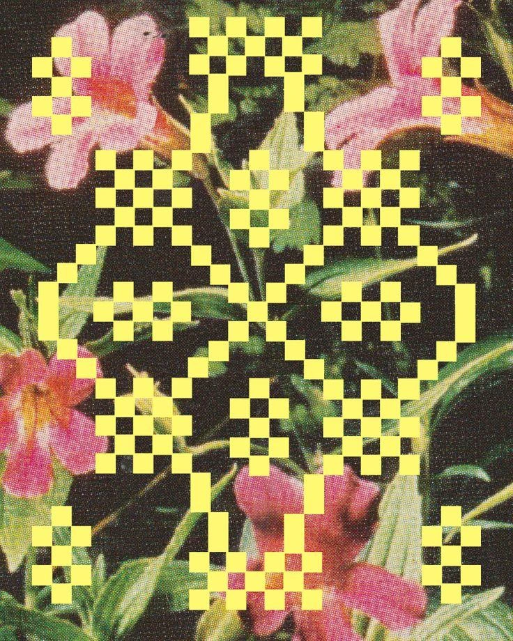
Developing creative direction and end-to-end event concepts, including theme, experience design, programming, and visual identity, while aligning with brand objectives and overseeing execution from ideation to delivery
I worked with MUTUAL CC on a project for The Ordinary, creating an intimate Ramadan suhoor experience to introduce the Rice Lipids and Ectoin Micro-Emulsion Moisturizer. The concept centered on reflection, care, and daily rituals, drawing a parallel between supporting the skin barrier and nurturing personal boundaries.
The event was scheduled for early March. My role included sourcing entertainment, AV, and catering, overseeing production of all collateral, and coordinating a Bali-based florist to design a large-scale rice plant installation that tied into the hero product.
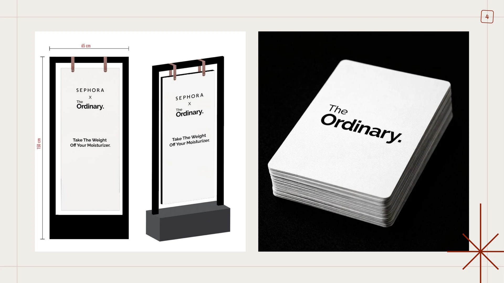
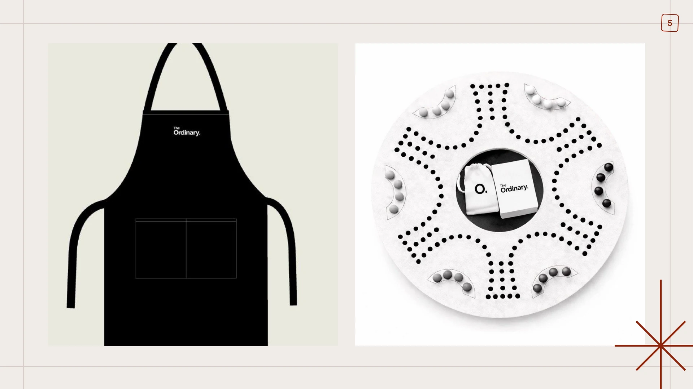
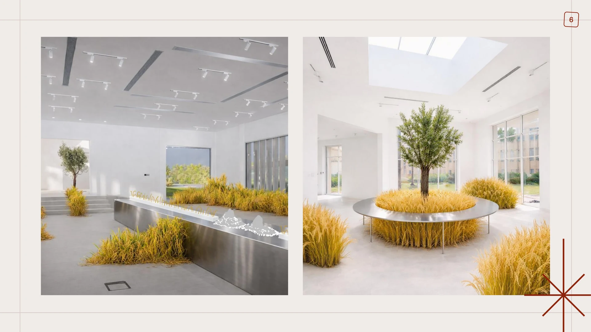
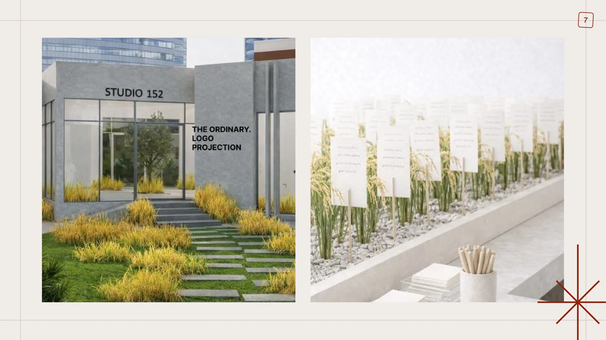
I worked with MUTUAL on a project for Make Up For Ever, curating an intimate suhoor where Ramadan was experienced through a cosmic lens, in line with the launch of the brand's cosmic makeup collection. Guests gathered beneath a suspended solar system, explored the new collection, and took part in moments of creativity and reflection inspired by the theme.
The event was scheduled to take place in the first week of March. My responsibilities included sourcing entertainment and a chef to create a supper club with dishes inspired by Ramadan and the solar system, as well as overseeing the production of items ranging from printed collateral to larger-scale elements such as a floating solar system installation within the venue.
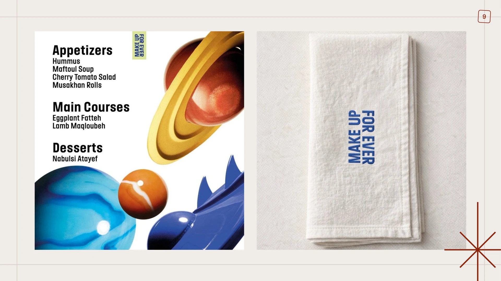
Event execution: overseeing end-to-end delivery of events, including vendor coordination, production management, logistics, on-site setup, and real-time problem-solving to ensure seamless and high-quality execution aligned with the creative vision.
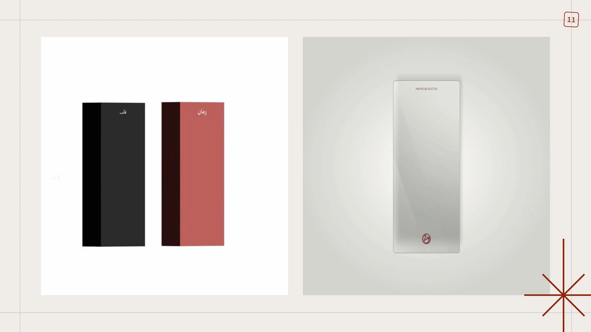
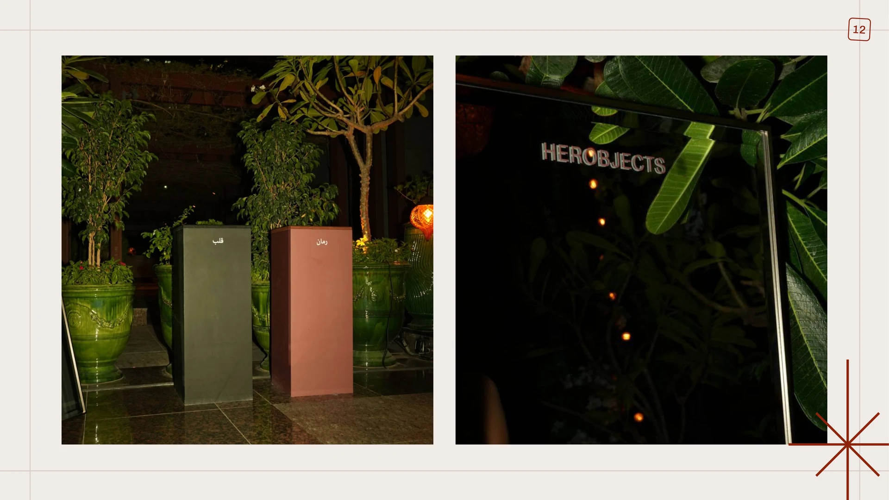
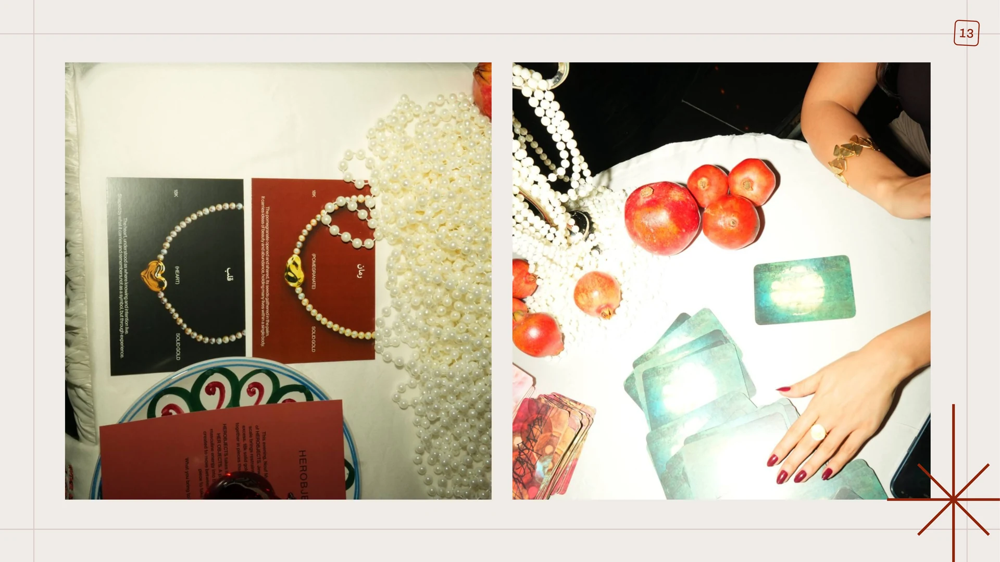
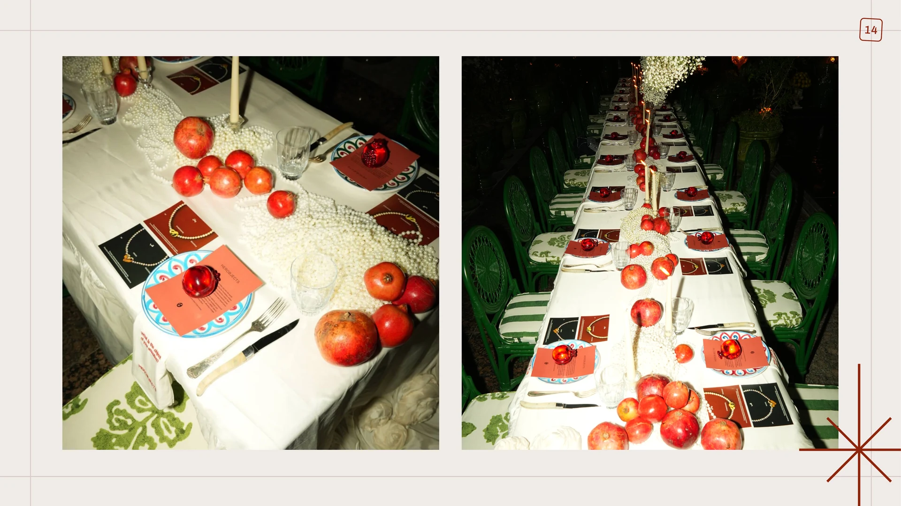
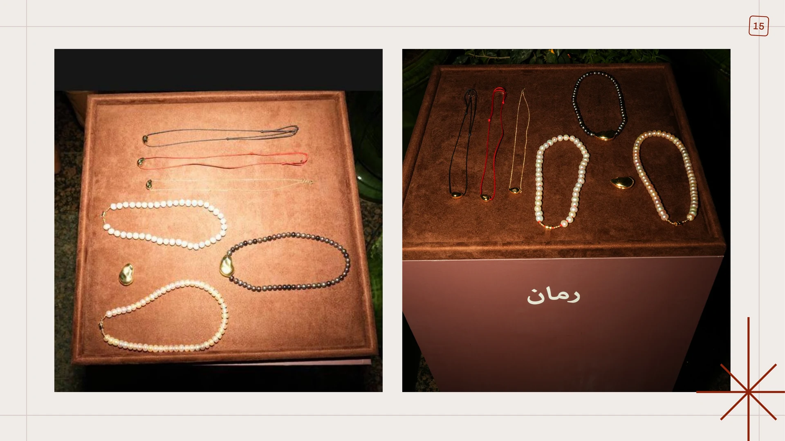
PR strategy: developing and implementing strategic communication plans to build brand visibility and reputation, including media targeting, messaging, campaign planning, and securing impactful coverage across key titles.
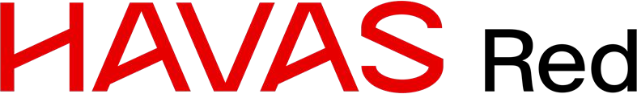
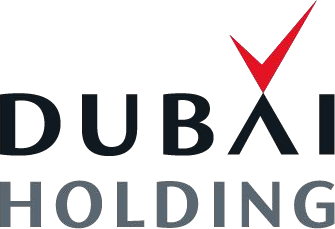
During my time at Havas Red, I worked on PR and communications for Dubai Holding Asset Management destinations, including Palm West Beach, Club Vista Mare, The Club, Bay Avenue, and The Outlet Village. My responsibilities included coordinating media interviews and compiling comprehensive coverage reports across all PR and influencer activity. I also managed press releases, secured media features, and led influencer collaborations (both barter and paid), while developing and executing campaign strategies from ideation through to delivery.
Campaign highlights include Staycation on Palm 2025, where I organized and led the influencer launch dinner, resulting in over 130 organic social media clippings from 20+ influencers in attendance, with 5 continuing on to participate in the staycation experience. The wider campaign generated over 30 additional influencer-led clippings on a barter basis. I also supported the Guinness World Record activation for the largest edible fortune cookie, celebrating Dragon Mart's 20th anniversary, securing over 20 organic media clippings.
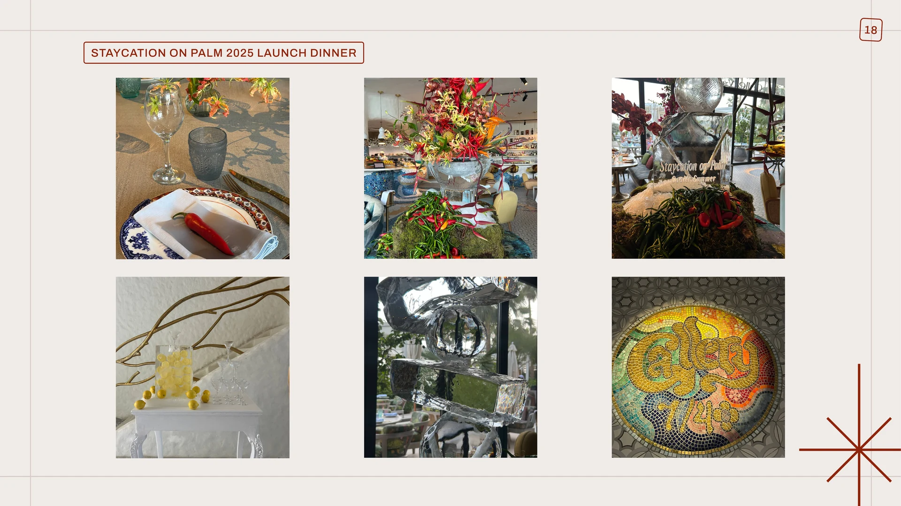
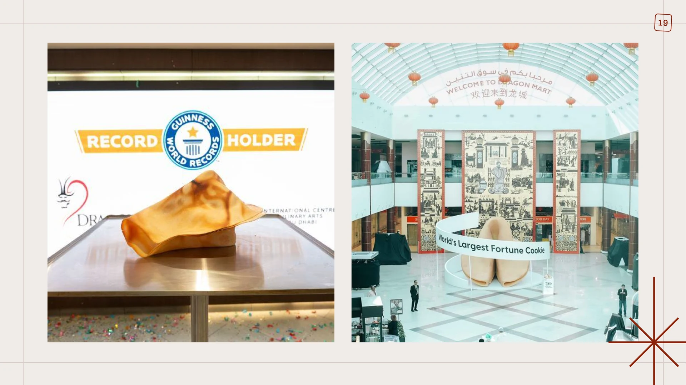
During my time at Havas Red, I led corporate communications for L'Oréal, managing press release development, C-suite Q&As, interview pitching, and event and content coordination. I also contributed to high-profile initiatives such as L'Oréal for the Future and LEAP KSA 2025, overseeing media strategy and on-ground execution, and secured Tier 1 media interviews for senior executives across publications. I coordinated the development of C-suite Q&As, including drafting responses and incorporating key messaging.
I secured high-profile media coverage across major regional and international platforms, including Gulf Business, Entrepreneur Middle East, Fast Company Middle East, Hia Magazine, Al Watan, Arab News, Arabian Business, Forbes Middle East, and Arab News France. Campaign highlights include LEAP KSA coverage, the Binsina x L'Oréal refillable campaign, L'Oréal Skin Summit Riyadh, and the L'Oréal Jamal event, along with FWIS 2024 winner interviews featured in over 10 Tier 1 publications.
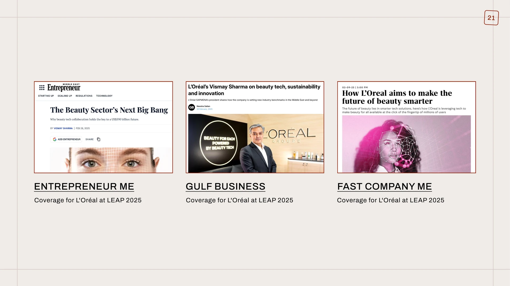
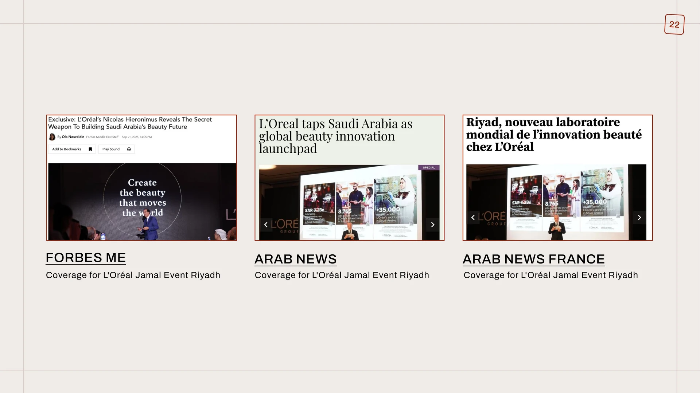
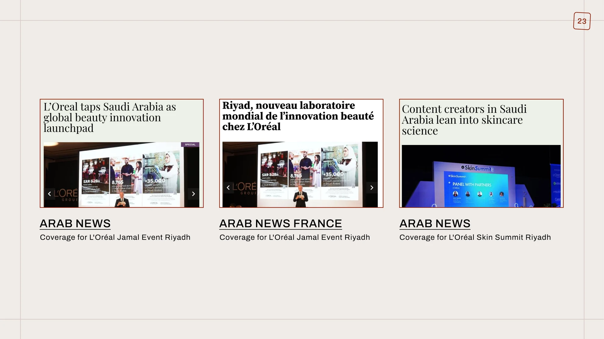
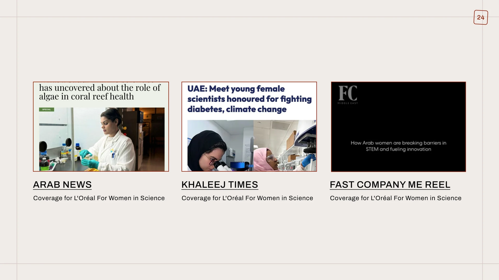